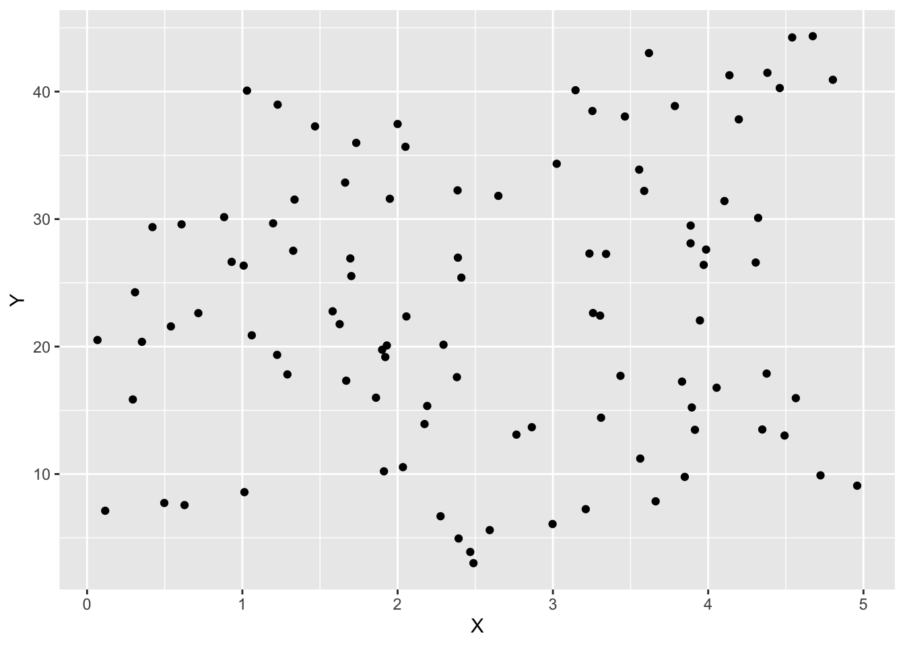

6 把握を目的とする要約: バランス後の比較
バランス後の比較では、\(X\)内での\(Y\)についての差の推定を目指します。 このような比較は、因果効果や格差の推定の肝となります。
例えば、2022年と2021年の東京２３区の中古マンション市場における、取引価格と立地(中心6区かそれ以外か)について平均的な差は以下の通りです。
2022年においては、平均取引価格が2021年に比べて上昇していますが、同時に中心６区の物件割合も増加しています。 一般に中心６区の物件の方が取引価格が高い傾向が予想されるので、その分取引価格の上昇が”底上げ”されている可能性があります。 もし中心6区の物件割合が不変であった場合、平均取引価格にどのような差が残るでしょうか？
6.1 実例
6.1.1 合計特殊出生率
合計特殊出生率の国家間/時代間比較は、バランス後の比較の代表例です。 出生数の動向を把握する上で、新生児数を年次や国家間比較は、有益だとみなされてきました。 合計特殊出生率 は、成人の年齢構造の違いをバランスさせるために利用されている指標です。 単純な出生率（一年間に生まれた子供の数/女性の数）は、成人の年齢構造の影響を強く受ける可能性があります。 比較的高齢の成人の比率が高まれば、出生率は低下することが予想されるからです。 対して合計特殊出生率は、「仮に年齢構造が同じであった場合」の出生率を、以下の方法で推定しています \[\frac{15歳の女性が産んだ子供の数}{15歳の女性の数} +..+ \frac{49歳の女性が産んだ子供の数}{49歳の女性の数}\]
シンプルな枠組みであり、大規模なデータが活用可能な状況では、有効だと考えられます。 一方で、年齢以外の属性(教育歴、居住地等々)もバランスさせる場合、同じ属性を持つ事例数が少なくなり、適用が難しくなります。
6.1.2 既存店ベースの比較
バランス後の比較は、企業の経営戦略を考える上でも用いられます。 小売や飲食/宿泊業などでは、しばしば既存店に絞った上での、売上比較がなされます。 例えば、あるコンビニチェーンで、店舗あたりの平均売り上げが1000万円増大したとします。 同時に去年から今年にかけて、新規出店も大きく増加したとします。 新規店の方が売上が高くなる傾向がある場合、新規店割合の違いが、平均売上の上昇をもたらした可能性があります。
既存店割合をバランスさせるシンプルな方法として、既存店のみに絞った平均売上を比較がよく行われます。 合計特殊出生率と同様に、新規店比率のみをバランスさせるのであれば、非常に実践的な方法です。 しかしながら他の属性、例えば客層の変化など、もバランスさせたい場合は、事例数が不足する可能性が高くなります。
6.2 推定対象
以上の推定対象は、一般に以下のように定義できます。
グループ \(d=\{0,1\}\) における \(Y\) の平均値は、一般に以下のように書き換えることができます。 \[(D=d)におけるYの平均値\] \[=\Biggr\{(X=x\ \&\ D=d)におけるYの平均値\times (D=d)における(X=x)の割合\Biggr\}\] \[のxについての総和\]
\(D=\{0,1\}\) 間での平均差を生み出す要因は、以下に分解できます。
\(D=\{0,1\}\) の間での\(Y\)の平均値の違い
\(D=\{0,1\}\) の間での\(X\) の分布の違い
バランス後の比較における推定対象は、\(X\) の分布の違いを排除したバランス後の平均値の差として定義します。 \(D=d\)のバランス後の平均値は、\[(D=d)におけるYのバランス後平均値\] \[=\Biggr\{(X=x\ \&\ D=d)におけるYの平均値\times (X=x)へのウェイト\Biggr\}\] \[のxについての総和\]
\((X=x)へのウェイト\)は、原理的には研究者が設定できます。 最も代表的なウェイトは、データや母集団全体での\(X=x\)の割合です。
バランス後の平均値の差は、\(X\) 内での平均差の\((X=x)へのウェイト\)を用いた集計値として書き換えることができます:
\[\Biggr\{\Bigr[(X=x\ \&\ D=1)におけるYの平均値-(X=x\ \&\ D=0)におけるYの平均値\Bigr]\] \[\times (X=x)へのウェイト\Biggr\}のxについての総和\]
例えば、立地と取引年ごとの平均取引価格は以下です。
| 平均価格 | CBD | TradeYear | 事例割合 |
|---|---|---|---|
| 64.8 | 1 | 2022 | 0.11 |
| 60.5 | 1 | 2021 | 0.11 |
| 39.2 | 0 | 2022 | 0.37 |
| 37.7 | 0 | 2021 | 0.41 |
2022/2021年の平均取引価格差は、データ全体では2.2 ですが、\(CBD=1\) では 4.3、\(CBD=0\) では 1.4 となります。 よって立地をバランスさせた後の平均差は4.3 と 1.4 の”平均値”となります。 例えばデータ上での立地の割合、 CBD=1が0.22、CBD=0が0.78、をウェイトとして用いるのであれば 2 がバランス後の平均差となります。
6.2.1 Balancing Weight
バランス後の平均値は、Balancing weight \(\omega(x)\)を用いた加重平均としても計算できます。 バランス後の平均値を以下のように書き換えられることで、Balancing weightは定義できます。 \[(D=d)におけるYのバランス後平均値\] \[=\Biggr\{(X=x\ \&\ D=d)におけるYの平均値\] \[\times \underbrace{\frac{(X=x)へのウェイト}{(D=d)における(X=x)の割合}}_{\equiv\omega(d,x)}\] \[\times (D=d)における(X=x)の割合\Biggr\}\] \[のxについての総和\]
バランス後の平均値は、\(D_i=d\)を満たす事例についての加重平均として定義されます:
\[\frac{\omega(d,X_1)Y_1+..+\omega(d,X_N)Y_{N}}{\underbrace{N}_{D=dの事例数}}\] ただし \(\omega\)は以下を満たします。
\[(X=x)へのウェイト=\frac{\omega_1I_1(x)+..+\omega_NI_N(x)}{D=dの事例数}\]
例えば、\((X=x)へのウェイト\)としてCBD=1が0.22、CBD=0が0.78を用いるのであれば、Balancing Weightは以下のように算出できます。
| 平均価格 | CBD | TradeYear | 事例割合 | Balancing Weight |
|---|---|---|---|---|
| 64.8 | 1 | 2022 | 0.11 | 2.00 |
| 60.5 | 1 | 2021 | 0.11 | 2.00 |
| 39.2 | 0 | 2022 | 0.37 | 2.11 |
| 37.7 | 0 | 2021 | 0.41 | 1.90 |
6.2.2 理想的な推定方法
全ての\(X\)の組み合わせについて、十分な事例数が存在するのであれば、\(x\)内での平均差を直接計算し、平均値を計算することで、バランス後の平均差を計算できます。 しかしながら \(X\) の組み合わせが増えると、サブグループ内での事例数が極端に小さくなり、実行不可能です。 この問題を解決するために、OLSや傾向スコアの逆数などの利用が重要です。